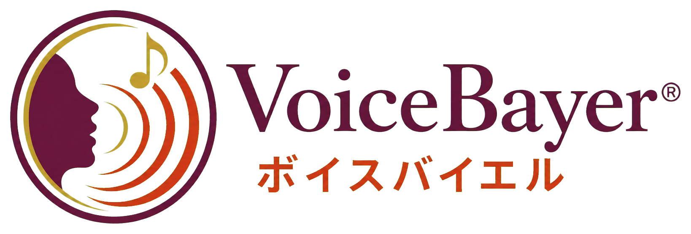

自分の声と発音を知る
声の響き、発音、速度、間、抑揚の傾向を確認し、あなたの長所と、これから整えるポイントを明確にします。

講座に申し込む声の響き・発音・読み方を整えたい方へ｜Zoomマンツーマン
声が響きにくい。発音が不明瞭になる。読み方を工夫しても、思うように伝わらない。ボイスバイエル(R)は、声の響きと発音の土台から見直し、繰り返し練習することで、言葉が明瞭に届く声と、自然な読みの表現を身につける全4回の個別講座です。
限定10名に達し次第、募集を終了します。
あなたの声・発音・読み方を丁寧に見つめ、
「今ある魅力を活かし、何をどう練習するか」を明確にします
受講するか迷っている方は、案内メールへの返信でご相談いただけます。無理に受講をおすすめすることはありません。
Your Concerns
About Voice Bayer
ボイスバイエル(R)は、声帯粘膜の乾燥を防ぎながら、声の響きと日本語の発音を整え、作品の意味や情景を声で届けるためのトレーニングです。
この入門講座では、現在の発声、発音、読み方を個別に診断。神経可塑性の考え方を応用し、正しい声の出し方と発音を繰り返し練習することで、新しい使い方を身につけていきます。その土台の上に、緩急・強弱・高低を使った読みの表現を重ねます。
初心者のためだけの入門ではありません。朗読を続けてきた方が、長年の声の使い方や発音の癖を客観的に見直し、聞き手に言葉と情景が届く声へと土台から組み直すための入門講座です。
What You Will Gain
声の響き、発音、速度、間、抑揚の傾向を確認し、あなたの長所と、これから整えるポイントを明確にします。
力に頼らず、無理なく響かせるための声の使い方を繰り返し練習し、長く朗読を楽しめる土台を育てます。
日本語の音を一つひとつ見直し、言葉が聞き手に明瞭に届く発音を身につけます。
整えた響きと発音を土台に、緩急・強弱・高低を使い、情景が自然に伝わる読み方へつなげます。
Curriculum
現在の発声、発音、読み方を確認し、一人ひとりの課題と改善ポイントを明確にします。自分では気づきにくい声の癖、喉への負担、読み方の傾向から、今後のトレーニング方針を整理します。
声帯を保護しながら発声の土台を作る、3種類の基礎トレーニングを実践。姿勢、呼吸、声の出し方、注意点をマンツーマンで指導します。
音声表現に欠かせない緩急・強弱・高低の使い方を、実際の読みを通して練習します。一本調子でも、やりすぎでもない、聞き手に伝わる表現を目指します。
受講者が改善したいこと、教えてほしいこと、練習したい作品などを扱います。第1回から第3回までに学んだ内容を踏まえ、一人ひとりの課題に合わせて仕上げます。
あなたの声に合わせた、全4回の個別レッスン
受講するか迷っている方は、案内メールへの返信でご相談いただけます。無理に受講をおすすめすることはありません。
音声表現入門講座に申し込む →限定10名に達し次第、募集を終了します。Support
各回のレッスン録画をご提供。理解しきれなかった部分や、自宅練習のポイントを何度でも見返せます。
録画は受講者本人の復習専用です。第三者への共有・転載・公開はできません。初回レッスン日から30日間、レッスンや自宅練習で分からないことをLINEで質問できます。原則、文章または短い音声メッセージで回答します。
返信にはお時間をいただく場合があります。即時返信を保証するものではありません。Testimonials
朗読や音声表現、指導の現場でボイスバイエル(R)を実践された方から寄せられた声をご紹介します。
44才・男性／指導歴5年・放送部顧問
ボイスバイエル(R)のトレーニングを教えたところ、部員がコンテスト、コンクールでランクインすることができました。
66才・女性／朗読歴22年
こんなに簡単な練習法で効果があるのか半信半疑でしたが、朗読コンテストで賞を貰うことができました。
27才・女性／朗読歴5年
夢だった声優事務所に所属することができました。
58才・女性／朗読歴20年
マイクに息が当たることを注意されなくなりました。
60代・女性／朗読歴12年
今までできなかった登場人物の表現ができるようになりました。
70代・女性／朗読歴10年
母音の無声化がまったくできなかったのですが、意識しなくてもできるようになりました。
40代・女性／朗読歴4年
小さな声で話しても、聞き返されることがなくなりました。
32才・女性／朗読歴1年未満
総合的に朗読表現を学べます。これから朗読を学ぼうという方にもおすすめです。
55才・女性／朗読歴3年
カラオケに行ったとき、友人から「上手くなったね！」と言われました。
63才・男性／朗読歴10年
緩急の「急」が苦手で、もつれることが多かったのが嘘のように、なめらかに早口で読めるようになりました。
※個人の感想・体験であり、効果や結果には個人差があります。
Recommended For
One to One
声の高さや響き方、喉への力の入り方、発音の癖、読み方の傾向は、一人ひとり異なります。同じ助言が、すべての人に当てはまるわけではありません。
受講者の声と読みを実際に確認しながら、今の響きと発音の状態、言葉がどのように届いているかを具体的に整理。その人に必要なトレーニングと改善方法を個別にお伝えします。
自分では気づきにくい声や発音の癖も、マンツーマンだからこそ、落ち着いて確認し、読みの表現へつなげられます。
 講師写真
講師写真Instructor
一般社団法人 日本朗読検定協会
朗読検定、朗読講師育成、音声表現指導などを通じて、朗読を学ぶ方、朗読を仕事にしたい方、朗読講師を目指す方の指導に携わっています。
発声や発音だけでなく、緩急、強弱、高低を活用した、聞き手に伝わる音声表現の指導を行っています。
Course Overview
Course Fee
Zoomマンツーマン 全4回・合計150分
FAQ
はい。現在の発声、発音、読み方を確認したうえで、一人ひとりに合わせて進めます。
大丈夫です。発声に自信がない方、自己流で練習してきた方にこそ、基礎から学んでいただきたい講座です。
パソコン、スマートフォン、タブレットで利用できます。接続方法に不安がある場合は、事前にご相談いただけます。
申し込み後、講師と相談のうえで全4回の日程を決めます。
原則として、初回から1か月程度を目安に全4回を受講します。ご事情に応じて相談可能です。
最終レッスン日から60日間ご視聴いただけます。
受講者本人の復習専用です。第三者への共有、転載、公開はできません。
レッスンで扱った発声、発音、基礎トレーニング、自宅練習に関する質問ができます。
レッスン内容に関する簡単な質問が対象です。長時間の音声添削や追加レッスン相当の内容は対象外です。
お申込み確定後のキャンセル、返金は承れません。
Take the Next Step
長く使ってきた声や発音の癖を、自分だけで客観的に判断し、変えていくのは難しいものです。
今の声と発音を知り、新しい使い方を繰り返し練習する。その土台に緩急・強弱・高低を重ねることで、言葉と情景が自然に届く読みへつなげます。
受講するか迷っている方は、案内メールへの返信でご相談いただけます。無理に受講をおすすめすることはありません。
音声表現入門講座に申し込む →限定人数に達し次第、募集を終了します。